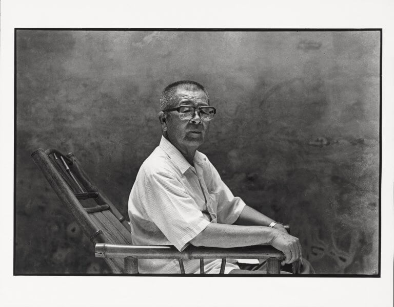
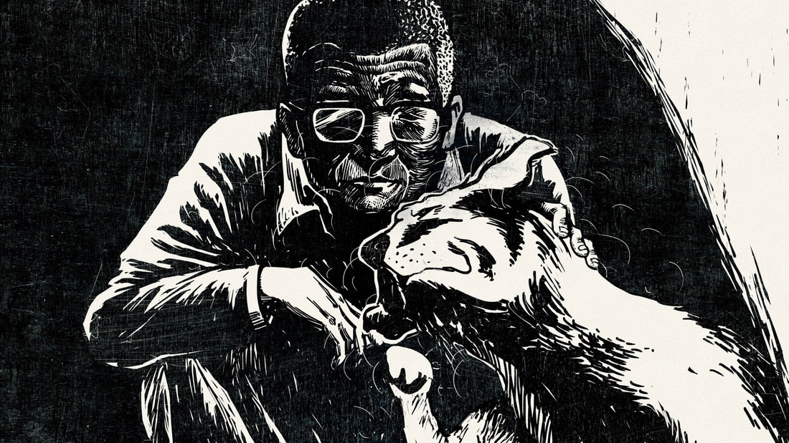
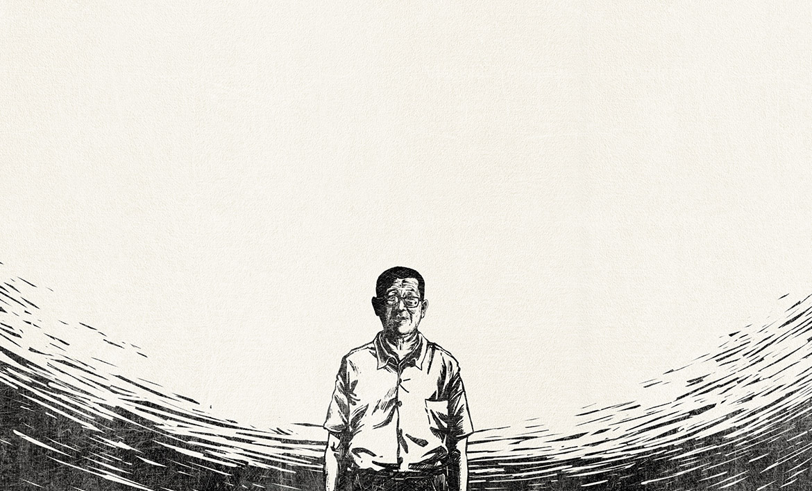

自 2011 年開始，臺灣紀錄片領域開始出現越來越多以文學家為主角的作品，其 中《他們在島嶼寫作》系列是一個重要的里程碑。這些紀錄片透過導演詳盡的資 料蒐集、長期的跟拍訪談，以及獨特的視角，讓我們能更深入地了解具有不同特 色的作家們。
但，製作一部關於作家的紀錄片並非易事。如何呈現作家的作品中的精華部分， 卻不會讓整部紀錄片變成冗長；如何透過訪談拼湊出作家完整的形象，甚至提供 觀眾一些在一般文獻與影像中難以得知的內容，這些都是使紀錄片更具靈魂、讓 導演付出努力的方向。除了作品和訪談，導演也需要花費大量心力來尋找和收集 作家的相關素材。這可能包括珍貴的視頻片段、照片、信件、筆記等，這些素材 能夠豐富紀錄片的內容，並將觀眾帶入作家的生活世界。
在此之前，我對葉石濤對臺灣文學的貢獻並沒有太多的瞭解，僅是以他作為一 位文學作家的基本認識的前提下觀賞這部紀錄片。
因為網路的發達，讓我們可以輕易地查詢到葉石濤的一生，包括他在文壇上的地 位、受白色恐怖影響所經歷的牢獄之災，以及他筆下論述臺灣文學發展的《台灣 文學史綱》等相關資料，然而，許卉林導演與監製林靖傑運用多種媒介與表演方 式，讓葉老的作品活靈活現地投射在銀幕上。
這部紀錄片既是以訪談、手稿文物及旁白等手法交織、建構出葉石濤的人生，導 演許卉林也藉由與 11 位藝術家的合作，透過舞台劇、舞蹈、落語、版畫等形式 的轉譯，精彩地呈現了葉石濤的眾多文學作品。
例如穿著日和服、跪坐著的戴開成，以誇張的表情與滑稽的語氣，搭配旁邊正在 彈奏月琴的曾伯豪，以「落語」劇場一搭一唱的形式，展現〈群雞之王〉角色之 間的不同特質與樣貌。

或是藝術家吳識鴻以細緻的線條，將〈有菩提樹的風景〉和〈舊城一老人〉轉變 為黑白版畫風格的動畫，詮釋白色恐怖對葉石濤的深刻影響。這些精心的表演與 創作，在導演巧妙的剪輯下，融合成一個以葉石濤為主的生命歷程，強烈地刻進 觀眾眼底，也強調了「葉石濤既是故事的敘述者，也是故事的主角」的概念。
《台灣男子葉石濤》為我們打開了一扇窗，讓我們能夠更深入地窺探葉石濤的傷 痕、他的生活以及他對臺灣這片土地的真摯情感。透過細膩的藝術形式的詮釋， 不僅搭建出文學與藝術的溝通橋樑，也使葉石濤的作品重新煥發出新的生命力。 此外，這部紀錄片也引領我們更深入地理解他的內心世界的迴盪，以及他創作背 後的意義，並從這些故事中獲得深深的感動與啟發。
葉石濤的貢獻不侷限於文學領域，更是展現在歷史舞台上的。他的親身經歷見證 了時代的變遷，也成為時代的見證者。正如葉石濤在自己的作品中提到「一個弱 小民族，他最大的武器便是隱藏自己」，紀錄片除了是以葉石濤的自傳小說集《台 灣男子簡阿淘》為取名概念，也揭示了在臺灣文學領域默默耕耘超過半個世紀， 以及在戒嚴時期的肅殺氛圍下，提出重建台灣文學「主體性」的那位台灣男子─ ─葉石濤。
這部作品帶出了在臺灣藝文圈內鮮少被討論的日治與戒嚴時期的臺灣文學議題， 或許會引起對文學有興趣的人的濃厚關注。而《台灣男子葉石濤》以一種親近和 易於理解的方式，呈現出臺灣的歷史，特別是上一代作家所面臨的困境。
而《台灣男子葉石濤》的重要性在於它填補了臺灣文學史中的一個空白，揭示了 被遺忘的歷史片段和文學事件，並呈現了那個時代作家的奮鬥和抗爭精神。透過 豐富的圖像和珍貴的資料，觀眾能夠更了解臺灣文學的發展脈絡，並對當時的文 學環境和文學家們的貢獻有更清晰的認識。
「創作」的本身就充斥著困難性，尤其當外來政治勢力和獨裁政權威脅到人們的 生存時，許多人會選擇放棄，為了自我保護而停止創作。然而，也有一些人選擇 堅持下去。雖然這些作家的生活對於年輕一代的我們來說非常陌生，但因為他們 的存在，臺灣的民主自由得以實現，臺灣的創作得以被看見和傳承，也展現出臺 灣的歷史的多元面貌，這對我們來說，是彌足珍貴的。
